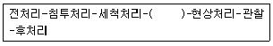

침투비파괴검사산업기사(구) (2010-09-05 기출문제)
1과목: 침투탐상시험원리
1. 후유화성 형광침투탐상시험에서 습식현상처리를 수행할 경우 언제 건조처리를 하여야 하는가?
- 침투처리 후
- 유화처리 후
- 세정처리 후
- 현상처리 후
(정답률: 50%)

2. 자외선등을 직접 보지 않는 이유의 설명으로 옳은 것은?
- 시력이 감퇴되기 때문이다.
- 백내장이 발생되기 때문이다.
- 안구에 심한 손상을 주기 때문이다.
- 시야가 잠시 동안 흐려지기 때문이다.
(정답률: 알수없음)
3. 일반적으로 100W 의 자외선조사등을 켠 후 한번에 조작할 수있는 시간으로 옳은 것은?
- 1시간
- 3시간
- 6시간
- 시험기간 동안 켜 놓을 수 있다.
(정답률: 알수없음)
4. 침투탐상시험의 유화시간을 설정하는데 가장 적절한 방법은?
- 시방서에 따른다.
- 임의적으로 설정한다.
- 제조자의 권고에 따른다.
- 실험에 의해 인정된 시간을 활용한다.
(정답률: 알수없음)
5. 침투탐상시험 결과 나타난 의사지시의 주된 원인으로 옳은 것은?
- 과잉세척
- 부적절한 세척
- 시험장소의 온도
- 부적절한 현상제의 적용
(정답률: 알수없음)
6. 염색침투탐상시험 중 가장 결함 검출 감도가 높은 것은?
- 수세성 염색침투탐상시험
- 후유화성 염색침투탐상시험
- 용제저거성 염색침투탐상시험
- 용제 현탁성 염색침투탐상시험
(정답률: 알수없음)
7. 와전류탐상시험에서 지시에 영향을 주는 것과 가장 거리가 먼 인자는?
- 시험체의 전도도
- 시험체의 투자율
- 시험체의 탄성계수
- 시험체와 시험 코일간 거리
(정답률: 알수없음)
8. 전도체의 얇은 튜브 형태인 시험체를 비접촉법으로 짧은 시간에 많은 양을 검사하기에 적합한 비파괴검사법은?
- 자분탐상시험법
- 방사선투과시험법
- 침투탐상시험법
- 와전류탐상시험법
(정답률: 알수없음)
9. 방사선투과시험의 단점에 대한 설명 중 틀린 것은?
- 미세한 표면 균열은 검출되기 어렵다.
- 모든 시험체의 용접부에만 적용할 수 있다.
- 다른 비파괴시험법에 비해 비용이 많이 든다.
- 조사선원의 이동 방향에 수직한 결함은 검출이 어렵다.
(정답률: 알수없음)
10. 비파괴검사의 주요 역할과 거리가 먼 것은?
- 결함 검출 및 품질을 평가한다.
- 제품개발 및 공정관리에 기여한다.
- 제품의 전기적 성질 측정이 가능하다.
- 제품 보수 및 장비의 교정을 관리한다.
(정답률: 알수없음)
11. "제품이 주어진 조건으로 규정된 기간 중 요구된 기능을 다할 수있는 성질"을 뜻하는 비파괴검사 용어는?
- 창조성
- 효율성
- 안정성
- 신뢰성
(정답률: 알수없음)
12. 물 5mL 에 침투제 40mL 을 첨가한 경우 물의 함량(vol%)은 약 얼마인가?
- 8.2
- 9.4
- 11.1
- 12.5
(정답률: 알수없음)
13. 내부 결함의 종류를 확인할 수 있는 가장 좋은 비파괴검사법은?
- 방사선투과시험
- 초음파탐상시험
- 자분탐상시험
- 침투탐상시험
(정답률: 알수없음)
14. 누설검사(leaking testing)의 원리와 가장 가까운 비파괴검사법은?
- 자분탐상시험
- 방사선투과시험
- 침투탐상시험
- 초음파탐상시험
(정답률: 알수없음)
15. 초음파가 매질 내 입자의 운동방향과 파의 진행방향이 직각일 때의 파동 형태는?
- 판파
- 종파
- 횡파
- 표면파
(정답률: 알수없음)
16. 재료의 내부에 발생하는 결함의 종적인 거동을 평가하는 비파괴시험법은?
- 누설검사
- 음향방출시험
- 초음파탐상시험
- 와전류탐상시험
(정답률: 알수없음)
17. 서브머지드(Submerged) 아크 용접부에서 간헐적인 넓고 흐린 자분모양이 습식법보다 건식법에서 잘 나타났다면 무슨 결함인가?
- 언더컷
- 크레이터 균열
- 용입부족
- 표면하의 슬래그 혼입
(정답률: 알수없음)
18. 시험체 주변에 압력차를 발생시켜 검사하는 비파괴검사법은?
- 누설검사법
- 자분탐상시험법
- 와전류탐상시험법
- 중성자투과시험법
(정답률: 알수없음)
19. 침투탐상시험의 장점이 아닌 것은?
- 적용이 간단하다
- 모든 종류의 결함을 검출할 수 있다.
- 원리가 간단하며 상대적으로 이해하기기 쉽다
- 검사체의 모양 크기에 대한 제약조건은 거의 없다.
(정답률: 알수없음)
20. 자분탐상시험에서 건식법과 비교한 습식법의 장점은?
- 표면결함 탐지에 우수하다.
- 거친 표면의 검사에 우수하다
- 고온 부품의 검사에 우수하다
- 표면직하 결함 검사에 우수하다
(정답률: 알수없음)
2과목: 침투탐상검사
21. 의사지시(False Indication)의 발생 원인을 설명한 것으로 옳지 않은 것은?
- 제거(세척)처리가 적절하게 실시되지 않은 경우
- 검사의 과정에서 조작 순서에 잘못이 있는 경우
- 검사개시 때의 표면상태가 침투탐상검사에 적합하지 않은 경우
- 검사체의 형상이 복잡하여 선정된 검사법이 그와 같은 형상의 것을 검사하기에 적합하지 않은 경우
(정답률: 알수없음)
22. 침투탐상검사 방법을 선택하는데 필요한 결정 요인과 거리가 먼 것은?
- 작업환경
- 시험방법의 적용시기
- 검출할 결함의 종류, 위치
- 적용규격, 기준 및 적용 법률
(정답률: 알수없음)
23. 침투탐상검사를 수행할 때 가장 주의해야 할 사항은?
- 전처리는 충분히 행한다.
- 현상시간은 가능한 한 길게 한다.
- 침투시간은 가능한 한 짧게 한다.
- 침투액 제거를 위한 세정을 충분히 한다.
(정답률: 알수없음)
24. 다른 침투탐상검사와 비교한 후유화성 형광침투탐상검사의 장점은?
- 비교적 비용이 저렴하다.
- 수도와 전기설비가 필요없다.
- 얕고 미세한 결함의 검출이 가능하다.
- 유화처리 후에는 표면 침투제의 제거가 가능하다.
(정답률: 알수없음)
25. 침투탐상검사시 날카롭고 연속된 선형지시는 주로 어떤 결함에 의해 생길 수 있는가?
- 균열(Crack)
- 점식(pitting)
- 기공(porosity)
- 모래개재물(sand inclusion)
(정답률: 알수없음)
26. 침투 탐상제 중 물 오염의 영향이 비교적 적은 것은?
- 침투제
- 유화제
- 용제세척제
- 건식현상제
(정답률: 알수없음)
27. 미세한 결함을 탐상하는데 적합하지 않지만 다공성 재질로 구성된 시험체를 검사하기 위해 유성 액체에 입자를 현탁시킨 용액을 시험면에 적용하여 검사하는 방법은?
- 침투제
- 입자 여과법
- 역 형광입자법
- 브레이킹 필름법
(정답률: 알수없음)
28. 수세성 형광침투탐상검사를 위한 일체형 검사 장치에서 자외선등을 설치해야 하는 곳만으로 조합된 것은?
- 세정처리 장치 및 검사실
- 전처리 장치 및 세정처리 장치
- 세정처리 장치 및 현상처리 장치
- 침투처리 장치 및 건조처리 장치
(정답률: 알수없음)
29. 특별히 규정하고 있지 않은 경우 침투탐상검사법 중 시험장치가 필요 없는 것은?
- 수세성 형광침투탐상 - 습식현상
- 수세성 염색침투탐상 - 습식현상
- 후유화성 형광침투탐상 - 습식현상
- 용제제거성 염색침투탐상 - 속건식현상
(정답률: 알수없음)
30. 침투액 중 계면활성제가 첨가되어 있는 것은?
- 수세성 형광침투액
- 후유화성 염색침투액
- 후유화성 형광침투액
- 용제제거성 염색침투액
(정답률: 알수없음)
31. 침투제 중 야외 제작 현장에서 용접부에 가장 많이 적용되는 것은?
- 후유화성 형광침투제
- 후유화성 염색침투제
- 용제제거성 염색침투제
- 용제제거성 형광침투제
(정답률: 알수없음)
32. 형광침투탐상검사에서 시험품 표면을 건조하기 위한 건조처리장치로 가장 적합한 것은?
- 전열기
- 적외선 건조기
- 열풍 순환식 건조기
- 백열등을 사용한 건조기
(정답률: 알수없음)
33. 기름베이스 유화제의 특성이 아닌 것은?
- 점도
- 반응성
- 표면장력
- 물함유성
(정답률: 알수없음)
34. 침투탐상검사 중 어떤 탐상 방법을 선택해야 하는 가에 대한 고려 대상과 가장 거리가 먼 것은?
- 시험체의 모양
- 시험장소의 기압
- 예측되는 결함의 종류
- 시험체 표면의 거친 정도
(정답률: 알수없음)
35. KS 규격에 의한 "VA-S" 의 시험절차 중 다음 빈칸에 적합한 처리 절차는?

- 유화처리
- 제거처리
- 건조처리
- 후속처리
(정답률: 알수없음)
36. 보통 주조품에서 발견될 수 있는 결함 중 제조시에 발생되는 결함은?
- 기공
- 피로균열
- 용입부족
- 응력부식 균열
(정답률: 알수없음)
37. 검사표면에서 자외선강도에 영향을 미치는 요인이라 볼 수 없는 것은?
- 전구 또는 필터의 오염
- 검사장소에서의 주위 광선
- 검사원의 옷이나 손에 묻은 형광 침투제
- 암실내에 보관하고 있는 건식현상제의 양
(정답률: 알수없음)
38. 침투탐상검사법 중에서 감도가 가장 낮은 경우의 조합으로 가장 옳은 것은?
- 형광침투제, 수세법
- 염색침투제, 수세법
- 형광침투제, 후유화제거법
- 염색침투제, 용제제거법
(정답률: 알수없음)
39. 수세성 형광침투탐상검사의 장점과 거리가 먼 것은?
- 넓은 면적을 간단한 조작으로 탐상하기 쉽다.
- 수분이 있어도 침투액의 성능에는 변화가 없다.
- 비교적 거친 시험체에 대해서도 적용이 가능하다.
- 열쇠구멍이나 나사부와 같은 복잡한 형상에도 적용이 가능하다.
(정답률: 알수없음)
40. 침투탐상검사에서 시험체를 부분 탐상하는 경우 시험하는 부분의 바깥 쪽 최소 어느 범위까지 전처리 해야 하는가?
- 10mm
- 15mm
- 25mm
- 50mm
(정답률: 알수없음)
3과목: 침투탐상관련규격
41. 침투탐상 시험방법 및 침투지시모양의 분류(KS B 0816)에 따라 침투지시모양의 관찰에 대한 설명 중 틀린 것은?
- 현상제 적용 후 1~5분 사이에 하는 것이 바람직하다.
- 형광침투액을 사용한 경우 관찰 전 1분 이상 어두운 곳에서 눈을 적응시킨다.
- 형광침투액 사용시 시험체 표면의 자외선 강도가 800㎼/cm2 미만이어서는 안 된다.
- 염색침투액을 사용한 경우 시험면의 조도가 500㏓ 이상인 자연광 또는 백색광에서 관찰하는 것이 바람직하다.
(정답률: 알수없음)
42. 침투탐상 시험방법 및 침투지시모양의 분류(KS B 0816)에 따라 탐상시험의 중간 또는 종류 후 재시험이 필요하지 않은 경우는?
- 조작 방법에 잘못이 있었을 경우
- 지시모양이 의사지시로 판정된 경우
- 결함지시모양이 결함인지 판단하기 어려운 경우
- 시험 기술자가 재시험이 필요하다고 인정되는 경우
(정답률: 알수없음)
43. 보일러 및 압력용기에 대한 침투탐상검사(ASME Sec. V, Art.6 App. Ⅱ)의 오염 관리에 관한 설명으로 틀린 것은?
- 니켈합금은 유황 함유량을 분석하여야 한다.
- 티타늄은 할로겐 함유량을 분석하여야 한다.
- 듀플랙스 스테인리스강은 질소 함유량을 분석하여야 한다.
- 오스테나이트 스테인리스강은 할로겐 함유량을 분석하여야 한다.
(정답률: 알수없음)
44. 항공우주용 기기의 침투탐상 검사방법(KS W 0914)에 따라 탐상시험 할 때, 과잉 침투제 제거를 위한 친유성 유화제 적용 방법으로 옳은 것은?
- 침지
- 스프레이
- 브러싱
- 거품내기
(정답률: 알수없음)
45. 보일러 및 압력용기에 대한 침투탐상검사(ASME Sec.V Art.6)에 의한 침투제의 적용방법이 아닌 것은?
- 침지
- 붓질
- 분무
- 굴림
(정답률: 알수없음)
46. 보일러 및 압력용기에 대한 침투탐상검사(ASME Sec.V Art.24 SE-165)에서 염색침투지시의 관찰 장소가 최소 얼마 이상인 조도가 필요한 것으로 규정하고 있는가?
- 250룩스
- 500룩스
- 750룩스
- 1000룩스
(정답률: 알수없음)
47. 보일러 및 압력용기에 대한 침투탐상검사(ASME Sec.V Art.6)에서 원자력발전소 부품에 대한 탐상시험을 행할 때 인정하는 탐상법에 속하지 않는 것은?
- 이원성 염색침투탐상시험
- 수세성 형광침투탐상시험
- 후유화성 염색침투탐상시험
- 용제제거성 형광침투탐상시험
(정답률: 알수없음)
48. 침투탐상 시험방법 및 침투지시모양의 분류(KS B 0816)에 따른 결함의 분류에서 정해진 면적 안에 존재하는 1개 이상의 결함을 의미하는 것은?
- 갈라짐
- 연속 결함
- 분산결함
- 수축상 결함
(정답률: 알수없음)
49. 보일러 및 압력용기에 대한 침투탐상검사(ASME Sec.V Art.6)에서 과잉의 수세성 침투액은 물분무로 제거한다. 이때의 수온과 수압의 최대치는 얼마인가?
- 수압 : 30psi, 수온 : 110℉
- 수압 : 50psi, 수온 : 110℉
- 수압 : 50psi, 수온 : 150℉
- 수압 : 80psi, 수온 : 150℉
(정답률: 알수없음)
50. 보일러 및 압력용기에 대한 침투탐상검사(ASME Sec.V Art.6 App.Ⅲ)에서 시험체 온도가 정상 범위를 벗어날 때 침투액의 성능을 알기 위하여 사용되는 비교시험편으로 옳은 것은?
- 담금질로 균열이 된 알루미늄 시험편
- 오스테나이트 조직이 된 스테인리스강판
- 넓이 3 x 4인치, 두께 1인치인 크롬 시험편
- 냉간 균열이 미세한 탄소강 시험편
(정답률: 알수없음)
51. 침투탐상 시험방법 및 침투지시모양의 분류(KS B 0816)의 B형 대비시험편 주 재료는?
- 주철
- 강철
- 알루미늄
- 구리합금
(정답률: 알수없음)
52. 보일러 및 압력용기에 대한 표준침투탐상검사(ASME Sec.V Art.24 SE-165)에서 플라스틱의 균열검사시 권고된 최소적용 침투시간은?
- 1분
- 2분
- 5분
- 7분
(정답률: 알수없음)
53. 보일러 및 압력용기에 대한 표준침투탐상검사(ASME Sec.V Art.24 SE-165)에 따른 강용접부의 불연속부의 종류로 볼 수 있는 결함은?
- 겹침
- 수축공
- 라미네이션
- 크레이터 균열
(정답률: 알수없음)
54. 항공우주용 기기의 침투탐상 검사방법(KS W 0914)에 따라 사용 중인 침투액을 형광휘도시험을 하였을 때, 사용하지 않은 침투액 휘도의 몇 % 미만일 때 폐기할 수 있는 가?
- 95%
- 90%
- 85%
- 50%
(정답률: 알수없음)
55. 침투탐상 시험방법 및 침투지시모양의 분류(KS B 0816)에 따라 시험기록을 작성할 때 시험기술자의 기록 사항은?
- 성명만 기재한다.
- 성명 및 생년월일을 기재한다.
- 성명 및 자격증 번호를 기재한다.
- 성명 및 취득한 침투탐상 관련 자격을 기재한다.
(정답률: 알수없음)
56. 업무와 관련된 생산 계획 예측이나 판매 분석, 시장 동향 등의 회의나 브리핑 시 발표에 필요한 내용을 작성하고 발표를 편리하게 해주는 패키지 프로그램은?
- 워드프로세서 소프트웨어
- 스프레드시트 소프트웨어
- 프레젠테이션 소프트웨어
- 데이터베이스 관리 소프트웨어
(정답률: 알수없음)
57. 인터넷 응용 서비스에 대한 설명으로 옳은 것은?
- Usenet : 인터넷은 수천 개의 사이트에서 수백만 개의 파일을 제공하고 있다. 이런 파일이나 정보를 찾기 위해 개발된 것이 Usenet 서비스이다.
- WAUIS : 동일한 관심사를 가진 사람 간의 토론의 장으로 일종의 전자게시판에 해당한다.
- Archie : 특정 데이터베이스 등을 키워드로 고속 검색할 수 있으며, 색인화 된 자료를 찾는데 유용한 서비스이다.
- Gopher : TUI 형식의 간단한 메뉴 방식으로 보다 쉽게 사용자가 원하는 정보나 검색 정보를 제공받을 수 있는 서비스이다.
(정답률: 알수없음)
58. 정보사회에서의 컴퓨터에 대한 설명으로 옳은 것은?
- 문자, 음성, 도형, 동영상 등 다양한 형태의 데이터를 처리 할 수 있다.
- 비교, 판단, 분류, 검색 등의 업무처리를 동시에 처리할 수 없다.
- 많은 양의 데이터를 저장할 수 있으나 다시 활용할 때는 시간이 많이 걸린다.
- 정보사회에서는 컴퓨터와 정보 통신의 역할이 미비하다.
(정답률: 알수없음)
59. 안전한 인터넷 뱅킹의 보안 기술과 거리가 먼 것은?
- 공인인증서
- 보안카드
- 전자서명
- 전자화폐
(정답률: 알수없음)
60. 자체 데이터베이스를 구축하지 않고 다른 검색 엔진을 통해 검색된 결과를 종합하여 보여주는 검색엔진은?
- 단순 검색엔진
- 키워드 검색엔진
- 메타 검색엔진
- 메뉴 검색엔진
(정답률: 알수없음)
4과목: 금속재료 및 용접일반
61. 금속의 결정격자 내에 발생되는 결함의 명칭과 그 결함의 연결이 틀린 것은?
- 점결함 - 원자공공
- 선결함 - 전위
- 연결함 - 치환형 원자
- 체적결함 - 주조결함
(정답률: 알수없음)
62. 극저탄소 마텐자이트를 시효석출에 의하여 강인화시킨 강은?
- 두랄루민
- 마르에이징
- 콘스탄탄
- 아이드로날륨
(정답률: 알수없음)
63. 주철의 접종(inoculation) 처리 목적에 해당되지 않는 것은?
- 칠(Chill)화를 방지한다.
- 격자결함을 증대시켜 강도를 향상시킨다.
- 흑연의 형상을 개량한다.
- 기계적 성질을 향상시킨다.
(정답률: 알수없음)
64. 베어링합금 중 화이트메탈에 대한 설명으로 옳은 것은?
- 베빗메탈(babbit metal)은 Pb계 화이트 메탈이다.
- WM1 ~ WM4가 Sn계, WM6 ~ WM10가 Pb계 화이트 메탈이다.
- 루기메탈(lurgi metal)은 Sn계 화이트 메탈이다.
- 반메탈(bahn metal)은 Sn계 화이트 메탈이다.
(정답률: 알수없음)
65. 다음 중 제품명과 그에 따른 합금의 주성분이 틀린 것은?
- 청동 : Cu + Sn 합금
- 모넬메탈 : Al + Si 합금
- 하이드로날륨 : Al + Mg 합금
- 오스테나이트계 스테인리스강 : Cr + Ni 합금
(정답률: 알수없음)
66. 압력이 일정한 경우 A, B 합금에서 두 상이 공존하는 영역에서의 자유도는?
- 0
- 1
- 2
- 3
(정답률: 알수없음)
67. 다음 황동 중 95%Cu-5%Zn으로 구성된 합금은?
- 길딩메탈(Gilding metal)
- 커머셜 브론즈(Commercial bronze)
- 레드브라스(Red brass)
- 로우브라스(Low brass)
(정답률: 알수없음)
68. 분말야금법으로 제조되어 전기재료에 많이 사용되고 있으며, 다음 중 용융점이 가장 높은 금속은?
- W
- Ni
- Al
- Fe
(정답률: 알수없음)
69. 금속의 공통적 특성이 아닌 것은?
- 수은을 제외하면 상온에서 고체이며, 결정체이다.
- 열과 전기의 양도체이다.
- 소성변형성이 있어 가공하기 쉽다.
- 이온화하면 음(-)이온이 된다.
(정답률: 알수없음)
70. 표점거리가 112mm, 지름이 14mm인 시험편을 최대하중 4500㎏f에서 시편이 절단 되었을 때 늘어난 길이가 20mm 이었다면 연신율은 얼마인가?
- 5.9%
- 10.9%
- 17.9%
- 25.9%
(정답률: 알수없음)
71. 올리브덴(Mo), 텅스텐(W) 등의 금속재료를 접합시키는데 가장 적당한 용접법은?
- 원자수소용접
- 피복아크용접
- 스터드용접
- 전자빔용접
(정답률: 알수없음)
72. 용접제품의 변형 교정방법이 아닌 것은?
- 피닝법
- 국부 풀림법
- 박판에 대한 점 수축법
- 가열 후 해머링 법
(정답률: 알수없음)
73. 피복 아크 용접에서 아크전압이 20V, 아크전류는 150A, 용접속도를 200 cm/min 라 할 때 용접 입열량은 몇 Joule/cm 인가?
- 900
- 1200
- 1500
- 2000
(정답률: 알수없음)
74. 용접사의 기량 미숙으로 인해 발생되는 결함과 가장 관계가 적은 것은?
- 오버랩
- 라미네이션
- 슬래그 섞임
- 언더컷
(정답률: 알수없음)
75. 피 복 아 크 용 접 에 서 아 크 쏠 림 을 방 지 하 는 방 법 이 아 닌 것 은 ?
- 직류 용접기를 사용한다.
- 아크 길이를 짧게 한다.
- 접지점을 될 수 있는 대로 용접부에서 멀리 한다.
- 엔드 탭을 사용한다.
(정답률: 알수없음)
76. 직류 아크 용접에 있어서 용접봉을 양극에 모재를 음극으로 한 극성은?
- 역극성
- 정극성
- 용극성
- 비용극성
(정답률: 알수없음)
77. 동 및 동합금 용접으로 품질상 용접성이 가장 좋은 용접법은?
- CO2가스 아크 용접
- 피복 아크 용접
- 테르밋 용접
- 불활성가스 텅스텐 아크 용접
(정답률: 알수없음)
78. 저항용접에 사용되는 전원의 특징으로 가장 적합한 것은?
- 저전류, 대전압
- 저전류, 저전압
- 대전류, 대전압
- 대전류, 저전압
(정답률: 알수없음)
79. 피복 아크 용접의 용접부에 피트가 생기는 원인과 가장 관계가 적은 것은?
- 모재에 습기가 많거나 기름, 녹, 페인트가 묻었을 때
- 모재 가운데 탄소, 망간 등의 합금원소가 많을 때
- 극성의 연결을 잘못했을 때
- 모재 가운데 황 함유량이 많을 때
(정답률: 알수없음)
80. 절단의 종류 중 아크 절단에 속하는 것은?
- 수중절단
- 분말절단
- 플라즈마 제트절단
- 스카핑
(정답률: 알수없음)